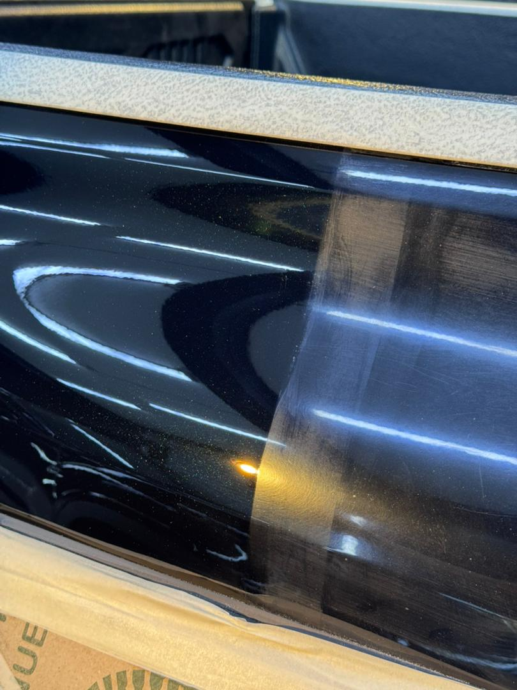
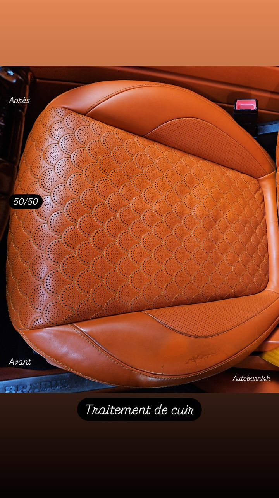
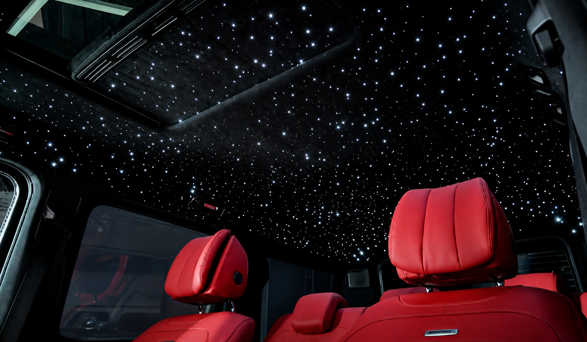
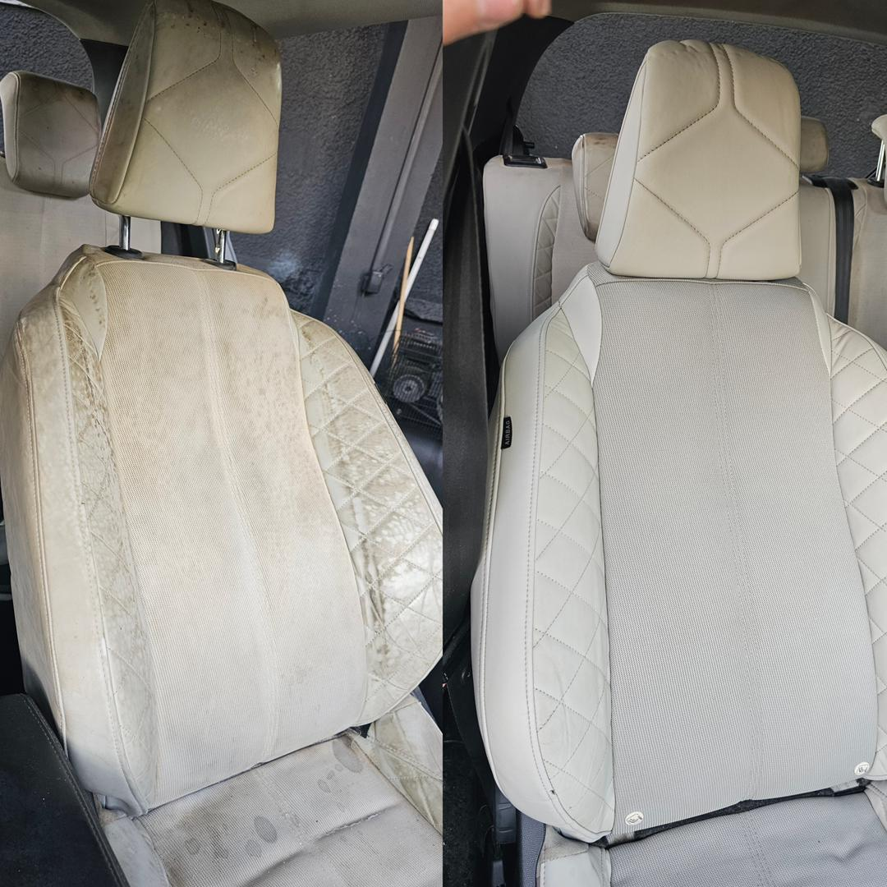
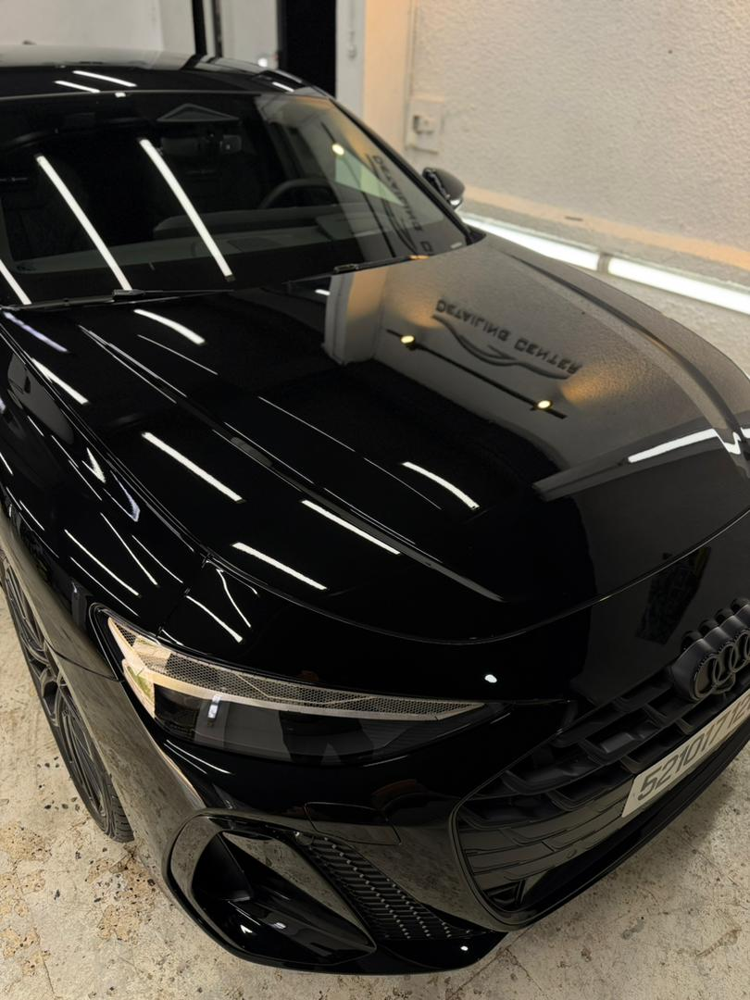
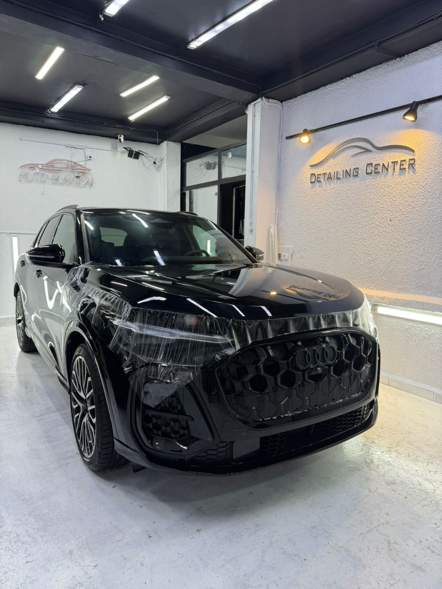

Nos
Services.
Des prestations pensées pour révéler, restaurer et préserver l'esthétique de votre véhicule, avec une attention particulière portée à chaque détail.
Le détail fait
toute la différence.
Chez Auto Burnish, chaque intervention est adaptée à l'état et aux besoins de votre véhicule. De la finition esthétique à la personnalisation, nos services sont pensés pour apporter un résultat soigné et cohérent avec votre véhicule.

Polissage
Un travail de finition destiné à raviver l'apparence de la carrosserie et à améliorer la profondeur ainsi que la régularité de son aspect visuel.
Ce que nous faisons
- Préparation et nettoyage de la carrosserie
- Analyse de l'état de la peinture
- Travail de polissage adapté à la surface
- Élimination de toutes les rayures
- Finition et contrôle visuel
Idéal pour
Les véhicules présentant une perte de brillance, des micro-rayures ou une finition devenue moins uniforme avec le temps.
Résultat recherché
Une carrosserie visuellement plus uniforme, plus profonde et plus brillante.

Traitement
du cuir.
Un soin dédié aux surfaces en cuir de l'habitacle afin de leur redonner un aspect propre, soigné et visuellement plus uniforme.
Ce que nous faisons
- Nettoyage des surfaces en cuir
- Travail minutieux sur les différentes zones
- Soin adapté à l'état du cuir
- Traitement des surfaces selon leur finition
- Finition et contrôle de l'intérieur
Zones concernées
Selon l'état du véhicule : sièges, panneaux, accoudoirs, volant et autres surfaces intérieures en cuir.
Résultat recherché
Un intérieur plus propre, plus uniforme et visuellement mieux entretenu.

Ciel étoilé.
Une personnalisation lumineuse de l'habitacle qui transforme le ciel de toit et apporte une ambiance distinctive à l'intérieur du véhicule.
La prestation
- Préparation de l'intérieur
- Installation du système lumineux
- Organisation esthétique des points lumineux
- Intégration au ciel de toit
- Finition et contrôle visuel
Personnalisation
La disposition et le rendu peuvent être pensés selon le style recherché et l'habitacle du véhicule.
Esprit
Une atmosphère plus exclusive et personnalisée, pensée pour donner une identité particulière à l'intérieur du véhicule.

Lifting
automobile.
Une intervention esthétique globale destinée à redonner au véhicule une apparence plus fraîche, soignée et visuellement renouvelée.
Ce que nous faisons
- Évaluation de l'état esthétique du véhicule
- Nettoyage et préparation
- Travail sur les éléments nécessitant une remise en valeur
- Finitions intérieures et extérieures
- Contrôle général du rendu final
Pour quel véhicule ?
Pour un véhicule qui nécessite une remise en beauté générale ou qui a perdu une partie de son aspect esthétique initial.
Résultat recherché
Une présentation générale plus propre, plus fraîche et plus harmonieuse.

Finition
& lustre.
Le travail de finition qui vient compléter la préparation esthétique du véhicule et mettre en valeur son aspect général avant sa restitution.
Notre approche
- Préparation finale des surfaces
- Travail de finition de la carrosserie
- Mise en valeur de la brillance
- Attention portée aux détails visibles
- Contrôle final du rendu
Idéal pour
Compléter une prestation de detailing, raviver la présentation du véhicule ou préparer sa restitution.
Résultat recherché
Une finition propre, homogène et lumineuse, avec une attention particulière portée aux détails.

Protection
personnalisée.
Une approche sur mesure pour choisir une solution de protection adaptée au véhicule, à son utilisation et au niveau de protection recherché.
Notre approche
- Évaluation du véhicule
- Identification des zones à protéger
- Analyse des besoins du propriétaire
- Proposition d'une solution adaptée
- Préparation et finition de l'intervention
Selon vos besoins
La protection peut être pensée autour de certaines zones spécifiques ou dans le cadre d'une approche plus globale du véhicule.
Objectif
Préserver au mieux l'apparence du véhicule grâce à une solution choisie en fonction de ses besoins réels.
Votre véhicule.
Notre attention.
Vous ne savez pas quelle prestation choisir ? Contactez-nous et discutons ensemble de l'intervention la plus adaptée à votre véhicule.
Prendre rendez-vous ↗